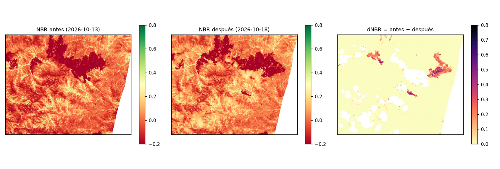

Del foco de calor a la hectárea: midiendo el incendio de Abancay (octubre de 2026)
Pregunta: ¿cuánto territorio se quemó en el incendio de Abancay (Apurímac), según imágenes Sentinel-2 y el índice dNBR? Sentinel-2 del 13 al 18 de octubre de 2026 y focos NASA FIRMS del 14 al 19.
Mapa del área quemada
Naranja: píxeles con dNBR ≥ 0.27 a ≤ 1 km de un foco. Puntos celestes: focos VIIRS. Fondo: NBR posterior.

Focos de calor por día
En gris, los 13 focos del 19 de octubre: posteriores a la imagen «después» (18 oct).
Cobertura del área quemada
% de los píxeles quemados por tipo de cobertura (WorldCover 2021).
El área depende del umbral
Hectáreas quemadas según el umbral de dNBR. Resaltado: el umbral usado.
Imágenes Sentinel-2 usadas
Fechas y nubosidad, reportadas antes de calcular.
Zona de estudio: lon −72.60 a −72.38, lat −13.75 a −13.58. La imagen del 20 de octubre tenía 93 % de nubes y no se pudo usar.
Limitaciones
- Un foco no es un incendio: 13 de los 120 focos son posteriores a la imagen del 18 oct y quedan a 0,5–2 km de lo mapeado.
- Nubes: 11 % de la zona nublada en la imagen posterior; 4 focos caen bajo nubes. El área puede estar subestimada.
- Umbral y fechas: con 0.10 serían 1 261 ha y con 0.44, 81 ha. Es una estimación satelital, no una medición en campo.
NBR antes, NBR después y dNBR
El dNBR (derecha) resalta lo que cambió entre el 13 y el 18 de octubre. La mancha oscura grande ya era oscura antes: no es parte de este incendio.
